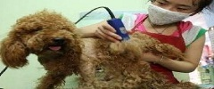

宠物美容概念 1.宠物美容 依照宠物的优缺点设计造型，借着美容师顶级的美发用品和精湛的修剪技法，为它们遮掩体型缺失、将优点显现出来 2.宠物美容程序 （1）保洁：洗澡 （2）保健护理：拔耳毛、清洗耳道和眼睛、修趾、剔脚底毛，挤肛门腺。 （3）修饰：通过毛发修剪为犬造型，也可弥补个别犬在外貌的缺陷。 更多内容 工具和用品 1.毛梳理与修剪工具 梳具：针梳、钉梳、分线梳、亮毛刷、开结梳（耙）、削毛刀、皮手套、跳蚤梳等。 修剪工具：剪刀、电推子等。 2.宠物美容用品 洗毛剂和护毛素、淋浴头、小喷雾器、吸水毛巾、吹风机、犬用染色剂、上妆粉、定型液。 指甲剪、指甲锉、止血粉。 洗眼液、泪痕清洗剂、洗耳液、耳粉、止血钳。 更多内容 基础护理 （一）被毛梳理 1.工具。 2.梳毛顺序 3.梳毛方法 4、梳毛时的注意事项 （二）洗澡 1、洗澡的次数。 2、洗澡的方法 （1）湿洗法 （2）干洗法 3、洗澡时的注意事项 更多内容
1．被毛的修剪及修饰  （1）修剪 （2）修饰 种类有拔毛、剃毛、烫毛、美白与染色 2．截耳 剪耳只在某些打斗的犬或大耳朵犬中施行，目的是为了美观或行走时方便或有利于打斗。 3．断尾 根据品种要求断除多余尾巴，只留少许尾椎骨，以增加美感和防止狩猎时尾部受伤而人为实行的外科手术。 给犬断尾，应在幼犬尚未开眼时进行。 4．包毛 为了减少毛发的损伤，并让长毛的犬感到日常舒适，用包毛纸对特定部位的毛包裹住。 包毛常用于约克夏，马尔济斯，阿富汗等长毛犬的日常护理包养。 5．化妆 在比赛中，会有画眼线、鼻头、脚垫、毛色等。 类似还有染色、配饰、服装。 6．宠物SPA 专业的宠物经络按摩与推拿手法进行按摩，宠物SPA的六大好处。 1．宁神 2．运动 3．清洁 4．滋养 5．驱虫 6．除臭